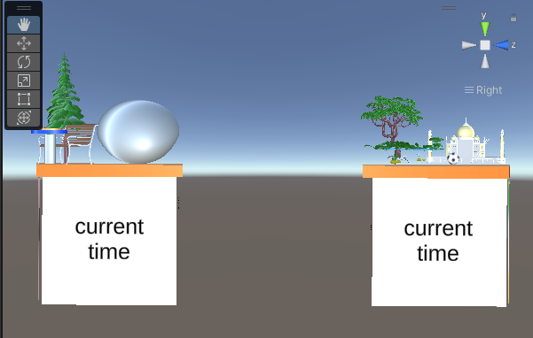

This application is based on the technology called Augmented Reality. Augmented Reality is an upcoming field which brings in a lot of new innovations and research for future generations to come. This Project in particular focuses on the different locations in the world. The project has a basic functionalty that uses a cube as a medium to get detected by the AR Camera in Unity and it will display the design/content that the creator of the program would want it to display.
These are a few examples of how it shall look on the screen:
Here is a link to the project:
Project 1
Link to youtube video
The following methods were used to build this application:
1. Unity -> Here's a link to download the latest version of Unity(2021.3.6f1): Unity A few citations of the sources that were used for this project are as follows:
1. 3D Models:
a. Chicago Bean - "Chicago Bean" (https://skfb.ly/6nOtV) by John Helman is licensed under Creative Commons Attribution (http://creativecommons.org/licenses/by/4.0/).
b. Fur Tree - "Fur Tree" (https://skfb.ly/6u8AT) by Harri Jones is licensed under Creative Commons Attribution-ShareAlike (http://creativecommons.org/licenses/by-sa/4.0/).
c. Bench - "Park Bench" (https://skfb.ly/6yGzP) by Sam is licensed under Creative Commons Attribution (http://creativecommons.org/licenses/by/4.0/).
d. Taj Mahal - "TAJ MAHAL 02" (https://skfb.ly/6UCxz) by kaduappa is licensed under Creative Commons Attribution (http://creativecommons.org/licenses/by/4.0/).
e. Old Tree - "Old Tree" (https://skfb.ly/6TvHn) by gelmi.com.br is licensed under Creative Commons Attribution (http://creativecommons.org/licenses/by/4.0/).
f. Pond/Lake - "Little Pond & fish" (https://skfb.ly/6SIJU) by Kenny Kwok. is licensed under Creative Commons Attribution (http://creativecommons.org/licenses/by/4.0/).
2. Textures:
a. Soccer Ball: Download free vectors, clipart graphics, Vector Art & design templates. Vecteezy. (n.d.). Retrieved September 19, 2022, from https://www.vecteezy.com/free-vector/soccer-texture
b. ShahJahan Mumtaz: Google. (n.d.). Google image result for https://imgeng.jagran.com/images/2021/jun/mumtaz-mahal1623897634328.jpg.
c. Indian Flag: Wikimedia Foundation. (2020, October 4). File:flag of India.svg. Wikipedia. Retrieved September 19, 2022, from https://en.wikipedia.org/wiki/File:Flag_of_India.svg
d. Chicago Theme: Chicago flag chi town skyline chicagoan apparel gift by Michael S. Pixels. (n.d.). Retrieved September 19, 2022, from https://pixels.com/featured/chicago-flag-chi-town-skyline-chicagoan-apparel-gift-michael-s.html
3. The attractions used for this project are located in Chicago, IL, USA and Agra, India.
- Most of the attractions used are very common like the Cloud Gate and Taj Mahal.
- The other 3d models that make these attractions more interesting is the bench, tree that are around every attraction in general.
- Moreover, the pond and the poster used for Taj Mahal give uniqueness for the attraction since it's an ancient monument.
- The soccer ball is for children to play around that area ;
Here are few pictures of how these designs shall look like:

A little discusion post regarding the use of Augmented Reality in real life:
It is a developing industry with many pros and cons. The fact that augmented reality could be used in real life is subjected to a lot of privacy and ethical issues.
However, it shall serve as a great source of development for future generations to come. Imagine a world where you would not need to use any of the physical objects
present around you but a world full of digital media. It is a fact that augmented reality shall serve as the future. Some of the objects that could be beneficial to
our world will be using objects to display informational content to students in class where they just need to hold the object in front of the camera to understand
the atomic structure of an element. Buying a diamond composition to explain the crystalline structure and atomic bonding would be expensive however if one needs to
show the atomic structure of a diamond in an augmented reality it shall come at no cost. these resources shall be used in the field of education to make it easier for
future generations to study and work through their academic courses. Moreover, the entertainment and gaming industry shall benefit a lot as well through this technology.
Many companies that have designed successful mobile games like PUBG, Call of Duty, Fall Guys, etc. could earn millions of dollars giving a major boost to their business.
Another fun fact about augmented reality is the holograms. These holograms could be very useful in various fields. It is because holograms exist people can save a lot of
lives just like the airplane simulator. Holograms can give access to doctors or practitioners to practice their surgeries and difficult operations without any unforeseen
circumstances to the living human. The same goes for an online airplane simulator. If a person is given a simulator to test their skills in flying a plane they shall be
able to save more lives than would be in real life. Thus, augmented reality could be the future, it shall help us save lives as well as help us stand
strong financially. Many of the resources have now turned online and it is in the best interest of all of us to say yes to augmented reality. Every coin has two sides,
in a similar manner augmented reality could hinder the privacy of people however if used ethically.
Here's a link that talks about it more